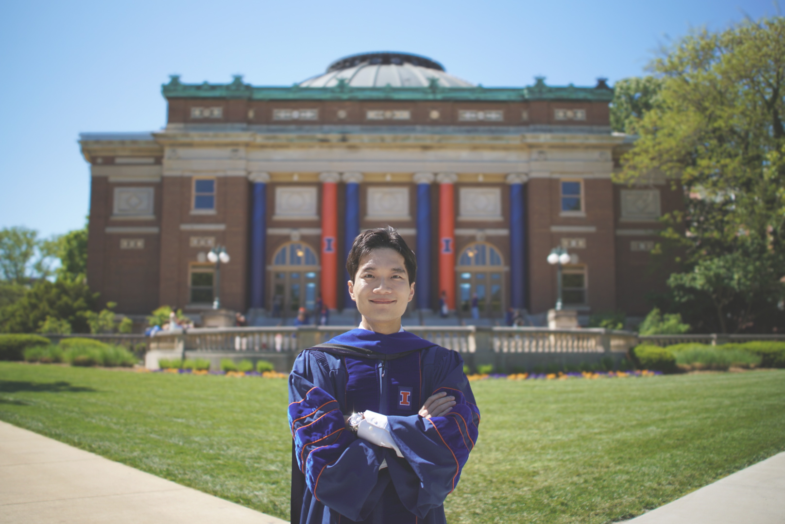

Jinsoo Choi
Postdoctoral Researcher · Purdue University
I am a postdoctoral researcher at Purdue University, working with Florea.AI, an interdisciplinary initiative bridging psychology, computer science, and philosophy to develop AI conversational agents that promote long-term human flourishing.
I earned my Ph.D. in Industrial & Organizational Psychology from the University of Illinois Urbana-Champaign (advisor: Dr. Bo Zhang). My research centers on the development and validation of personnel selection tools, psychometric and statistical methodology, and individual and organizational well-being.
📧 jschoi@purdue.edu · CV (PDF) · Google Scholar · LinkedIn · Instagram
Research Interests
- Personnel Selection. My research focuses on the rigorous development and validation of pre-employment tools (e.g., cognitive and personality tests) and fake-resistant measures (e.g., forced-choice formats) to deal with impression management and faked responses in high-stakes situations. Furthermore, to address the validity-fairness dilemma, I am interested in applying multi-objective optimization techniques.
- Research Methods. My methodological endeavors focus on the application of AI in general psychology and personnel selection — e.g., the use of AI conversational agents to promote long-term human flourishing through character virtues and the development of personnel selection tools. Additionally, my work focuses on developing SEM models/techniques to examine hierarchical psychological constructs and resolve related statistical issues.
- Well-Being. The ultimate goal of human beings is to flourish in their lives. My research focuses on enhancing subjective well-being by improving job satisfaction and making work feel more meaningful.
See the Research page for the full list of publications, searchable by year and topic.
Recent News
Started as a postdoctoral researcher at Purdue University with Florea.AI (PI: Dr. Louis Tay).
Graduated with a Ph.D. from the University of Illinois Urbana-Champaign.